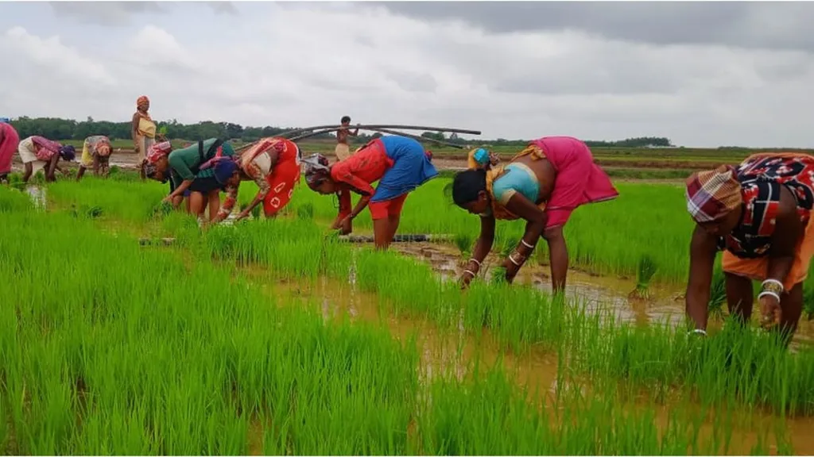

Agriculture portfolio
Graded, documented, export-ready
Browse a dependable range of agricultural staples, ingredients and farm-derived products, sourced through trusted growing and processing networks and prepared to agreed buyer specifications.
Source agriculture commodities at scale
Tell us your commodity, destination port and target volume — we'll handle grading, documentation and delivery.